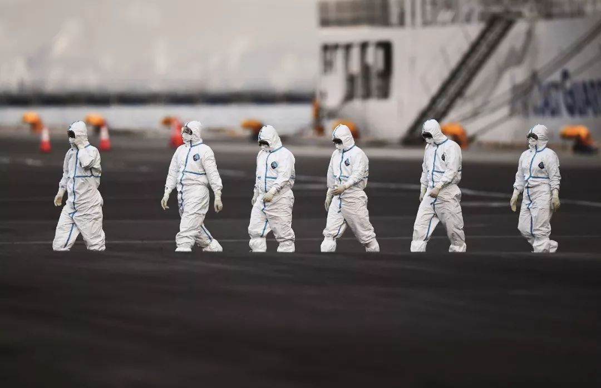
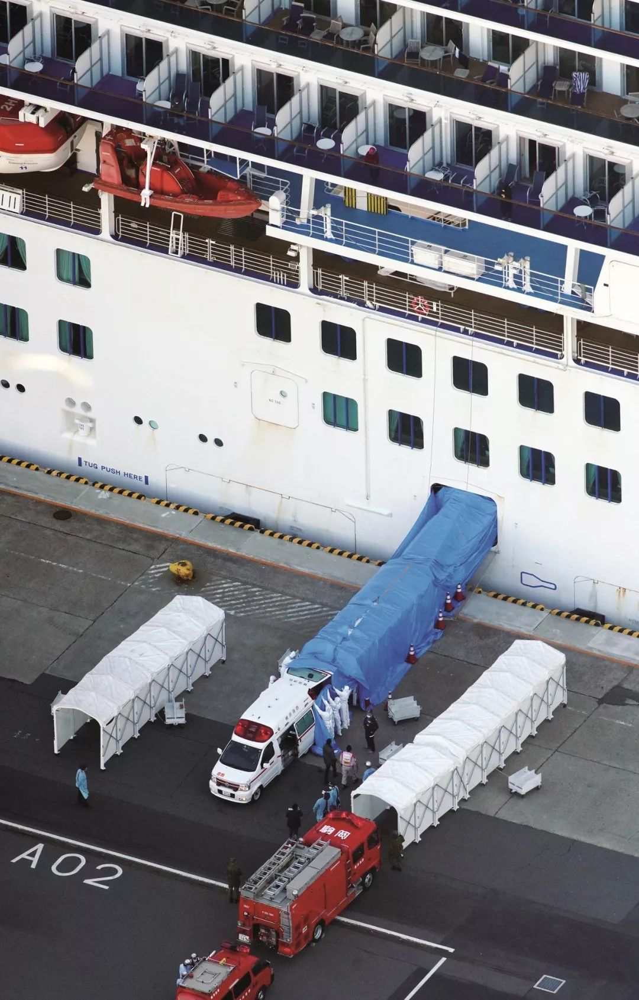
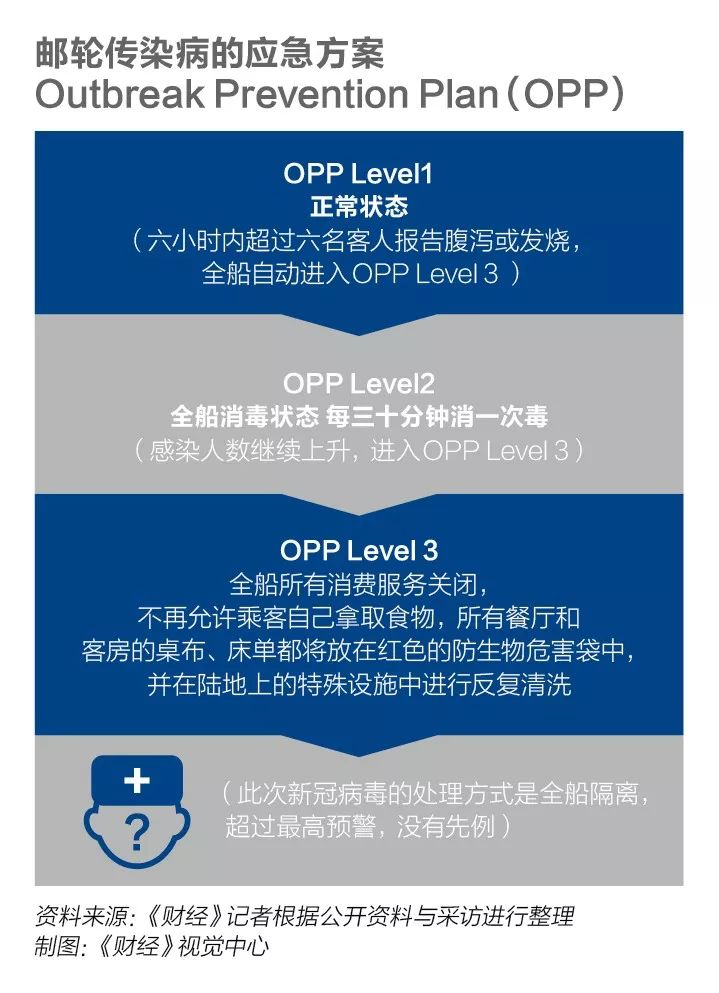

“钻石公主”号今日再下600人，各国接回后将继续隔离14天
原文链接 备份链接 图片来源：CNN “ 有报告指出，根据发病日期来看，在邮轮实施隔离措施后，乘客之间的传染有所减少。在隔离期后期，感染主要发生在船员之间以及客舱之内。 ” 继昨天443名检测呈阴性的乘客离开“钻石公主”号邮轮后，600多 …

钻石公主号邮轮在全球新冠疫情中是一个特殊又典型的样本：由于邮轮的封闭环境，它成为了传染集中暴发地，证明了全人类的普遍易感性；这又是一艘停靠在日本、船籍是英国、运营主体属于美国的邮轮，权责的模糊也导致了疫情防控的延误

2020年2月10日，在日本横滨，身穿防护服的工作人员从“钻石公主”号邮轮下来。截至2月13日，邮轮上的新型冠状病毒感染病例达到218人。图/法新
文 |《财经》记者 高洪浩 管艺雯 余洋洋
编辑 | 宋玮
新冠病毒（COVID-19）无形且可怕，相比于之前袭击人类的SARS和MERS，它呈现出高传染性、长潜伏期、低致死率的特点。它也不分年龄、性别、种族、国籍，感染一视同仁。
只要有传染源，在大海上航行的邮轮也不能幸免。全长290米，宽37.5米的钻石公主号在公主邮轮船队中排名第七，尽管体积并非最大，但也算得上全球设施最完善的顶级豪华邮轮之一。它的船体纯白，天蓝色的船底和大海相融合，看上去优雅宁静。它的甲板楼层就有18层，当夜幕降临，在一片漆黑的大海之上，整艘邮轮像是一座灯火通明的小型城市。
而现在，这艘豪华邮轮是全世界除了中国以外，新冠病毒确诊患者最多的地方。
从2020年2月3日起，这艘邮轮停靠在日本横滨大黑港口，来自50多个国家和地区的2000多名乘客被隔离，他们被要求不能走出自己20平米左右的舱室，餐点由船员轮班送到门口，他们每天唯一的自由时刻，是到甲板上“放风”一个小时，分批呼吸船舱外的新鲜空气。
除了2000多名乘客，船上还有超过1000名的船员。他们每天连续工作十几个小时，忙碌于邮轮的消毒和乘客的菜肴。船员承担着更大的病毒感染风险，他们被安排聚在一起吃简单的餐食，居住在比乘客房间狭小得多的舱室，四人共享一个卫生间。
这艘邮轮感染病毒的源头是一名80岁的中国香港乘客，该乘客1月25日在香港下船，2月1日确诊感染新冠病毒。2月3日，邮轮比原计划提前一天返回日本横滨母港，两天后，这艘载着3711人的豪华邮轮，被日本政府要求全船隔离。
从19日开始，约有943名乘客隔离满14天回到陆地。但全船隔离非但没能阻止病毒的传播，反而让病毒加速蔓延。剩下2768人在船上继续隔离，包括全部船员——这意味着621人可能不是这艘船的最终确诊人数。
该邮轮的确诊人数以单日数十人的速度猛增，最高单日新增了99名确诊感染者。两周时间，邮轮上总确诊人数从10人增至621，并有两人死亡。医学界注意到，这艘邮轮上的病毒似乎格外隐蔽，确诊的621人里无症状感染者高达321人，占比超过50%。
日本神户大学医院的传染病医学专家岩田健太郎设法跟随DMAT（日本灾难医疗援助团队）登上了邮轮，这位亲历过SARS和埃博拉病毒的传染病学家，2月18日晚通过上传到社交媒体的视频讲述了他在邮轮上看到的一切：
“钻石公主号就是一台新冠病毒的生产机器。在船上看到的一切让我非常震惊，几乎要昏过去。20多年的防疫工作经历中，我从未感到自己的感染风险如此之大。邮轮上甚至连最基本的绿区（未被感染）和红区（可能被病毒感染）都没有区分。邮轮上没有人是专业的感染控制专家，只有官员们在做完全外行的工作。”
但有关这艘全世界都在关注的邮轮，日本厚生劳动省所公开的信息却极为有限，除了确诊人数外，感染者的国籍、年龄、性别等信息时有时无，关于邮轮上的信息更是寥寥。
外界可看到的是，每天，身穿防护服的政府工作人员会将最新确诊的感染者接走，拉上窗帘的白色神秘巴士在港口进进出出，邮轮上被隔离的人只能隔窗远远观望。没有人知道真实情况。
“过去两周，这艘邮轮船内究竟发生了什么？因为过去两周日本政府没有提供有关邮轮内部发生了什么的任何信息。”岩田在视频中问道。目前岩田的视频已经删除，他也婉拒了《财经》记者的采访。
钻石公主号邮轮在全球新冠疫情中是一个特殊又典型，同时复杂性极高的传染学样本：
病毒层面，由于邮轮的特殊封闭环境，北京师范大学生命科学学院刘里远教授将这艘邮轮视为“一个高度理想的武汉新冠病毒的传染实验的居民楼模型”。
不断攀升的确诊人数证明了在条件完备、如此现代化的空间内，隔离依旧存在巨大局限性；船内各类人种都被感染，证明了全人类的普遍易感性；在专业人士介入下依然发生大规模传染，说明病毒传播途径多样，可能包括飞沫、接触、气溶胶传播，甚至是粪口传播；以及，在邮轮内可以验证，病毒是否有可能通过中央空调系统和通风系统、下水道系统传播。而在确诊者中，无症状的感染者比例不断升高，从56%到70%再到76% ，这是否意味着病毒的毒性降低而传染性在增强？
邮轮层面，这是一艘停靠在日本港口、船籍在英国、运营主体属于美国的邮轮，应该由谁来负责？一直以来，国际邮轮的责任归属始终是世界性难题，权责的模糊也导致了疫情防控的延误。
上海海事大学法学院讲师、《邮轮旅游法律要论》作者孙思琪告诉《财经》记者，“这是继1909年泰坦尼克号事件以后，世界邮轮史上最复杂的一次危机。”
国家层面，很少有人意识到日本自身的处境：首先这不是日本必须要尽的义务；其次，日本需要考虑到有限的医疗物资、是否在本国大面积传播的风险、对国民经济的影响风险，以及每一个政党和政治家对于自己前途命运的考量。这些复杂而又矛盾的因素使得整个日本陷入矛盾，也共同将这艘钻石公主号推入险境。
一位网友评论说，某种程度上，钻石公主号折射出了人类社会的脆弱，或许根源就在于那个无解的问题：是让火车撞向轨道上玩耍的小孩，还是让一车人坠入深渊。
穿过一条长长的由天蓝色油布盖住的舷梯，钻石公主号邮轮的首批约500名乘客在2月19日终于踏上陆地，“这是迎接世界的最后一条隧道。”一位中国香港乘客感叹。
他们已经在海上被隔离了14天，重新踏上陆地的感觉久违得美好。连当天上午的甲板“放风”时刻，对这名香港游客来说也变得珍贵，“这是我们离开前的最后一个甲板时刻，而这将成为历史。”她说。

（2月19日中国香港游客Yardley的甲板时刻 Twitter/ @ yardley_wong）
对钻石公主号上的3711个人而言，这将是一段特殊又难忘的经历，但没有人想再经历第二次。
2月1日下午，邮轮的汽笛声准时响起，在冲绳岛尽兴而归的乘客们已经返回船上，钻石公主号启程向最后一站横滨驶去，他们即将结束这次的“初春东南亚16天大航行”。
喧闹中鲜有人注意到公共电视正在播放的一则快讯：一名曾乘搭钻石公主号邮轮，并于1月25日在中国香港下船的游客被确诊患上新冠肺炎——这个凶猛肆虐的病毒彼时已迫使中国封锁了多座城市，导致11821人感染、259人死亡。
很快，这条新闻就被淹没了。行程进入到第11天，游客们毫无倦意，抓紧享受最后的邮轮时光：赌客和轮盘边的看官络绎不绝、高档自助餐厅觥筹交错、SPA区升腾起迷幻水汽吸引着爱美的女士。要知道，他们为这趟旅程支付了从25万日元（约人民币1.6万元）到138.2万日元（约人民币8.9万元）不等的费用。
《财经》记者了解到，当日，只有船员们被召集起来开了一个紧急会议，但高层的表现依然淡定。会议轻描淡写地开完了，管理者只是说，不用慌张，做好防护措施。这让原本还有些紧张的船员们心松弛了下来。
“当时大家一致认为，船上只出现了一位患者，且此人也已离船，便不足为惧。”中国籍贯船员张弛向《财经》记者回忆。在这艘邮轮中，只有22名船员来自中国，在1000多名船员中，一半来自菲律宾——他们对疫情的紧张感更弱。
随后，船员们也迎来了短暂的狂欢。虽然居住条件不好，但他们知道如何苦中作乐，比如一起约着健身房锻炼、开始成群约着串门聚会。船舱内外人群熙熙攘攘。
一位游客在社交媒体上发布了一段视频，当时邮轮尚未抵达横滨，邮轮合唱团正投入地唱着一首日本民歌，其中年龄最大的乘客有91岁。视频中，大家拿着打印出来的歌词，跟着旋律轻轻哼唱、点头、晃动身体。整个音乐厅和楼梯上都站满了乘客，大家认真得屏息倾听，害怕一丝响声会打破那个美好时刻。
这名游客写道，“那原本应该是我们在船上的最后一天，这是我第一次邮轮旅行，如此美好的时刻真得令人惊讶。”
几乎没人意识到，此刻的邮轮已是危机四伏。
在防疫专家眼里，邮轮有太多可以传播病毒的途径，它存在于游客每天呼吸的空气中、频繁接触的赌台、餐台、泳池、舞池、网咖、商店。
另一位钻石公主号的船员告诉《财经》记者，邮轮在每一次启航前，游客都会被集中在船上固定的集体空间，听长达半个小时到一个小时的安全播报说明，这恰恰可能是病毒传播的好时机。其中最大的一个集体空间是一座可容纳800人的剧院。
“钻石公主号的风险意识明显不足。”一位邮轮资深从业者对《财经》记者透露，早在2020年1月15日，一些与钻石公主号同类型的大型豪华邮轮便将原本服务船内的中国船员全部带薪遣返回国，试图从各方面将风险降至最低。
“公主号在几艘豪华邮轮里管理可能是最宽松的。”上述船员称。
他说，这里的员工拥有很多在其它邮轮上没有的自由，比如在员工区域不需要带胸牌、比如在员工酒吧穿拖鞋。相比之下，在皇家加勒比邮轮上，船员在员工区不用说穿拖鞋，连露出脚趾都被算是违反规定。
“在一些公主号的船上，也许是因为船身老旧，甚至连监控都安装不全。”上述船员告诉记者，这意味着在很多情况下，船员需要完全靠人力进行监管。
直到2月3日下午4时左右，船长才通过广播向全体乘客通报了疫情。当天晚上，邮轮比原计划提前一天返回日本横滨母港，日本厚生劳动省负责检疫的工作团队立刻上船开始通宵检测。
第一批检测结果在2月5日早上才通过船长广播公布，“有10人确诊感染。”但直到2月4日，全船隔离的前一天，游客们仍照常在餐厅聚集吃饭，船员们仍在继续服务。
从2月5日起，邮轮被日本政府要求全船隔离14天。三天后，邮轮208名参与检测的人员中，已经累计确诊64例，确诊率接近三分之一。
此时不安和焦虑逐渐开始弥散开。一位游客说自己几小时内至少测了七次体温。

（2020年2月10日，停靠在日本横滨港的钻石公主号邮轮。图/ 法新）
2月10日和2月12日又分别新增确诊了65人和39人，尤其12日那天，媒体报道一位参与检疫的官员确诊，这位官员在邮轮上戴着手套擦去汗水，并且重新使用他此前从脸上摘下的口罩。这则新闻让乘客们紧张不已，当时乘客们收到的防护设备几乎没有。
看到新闻后，那名几小时测了七次体温的游客开始觉得自己的喉咙似乎越来越痒，他不知道是因为过敏、或者是冷、或者是因为干燥的空气，还是自己出现了病毒的最初症状？这一天，他又至少测了五次体温。
2月13日又新增了44例确诊病例，2月15日是67例，2月16日是70例，2月17日新增了惊人的99例确诊病例，一直到2月19日，在累计3011个人的检测中，已经累计确诊621例，几乎邮轮上每3个检测的人中就有一个确诊病例。
数据让人惊心，仓促的全船隔离似乎毫无用处。
接下来5名船员确诊的消息带来了更多的不安。63岁的道尔来自加拿大，患有哮喘，他和妻子在13日接受外媒采访时表示，“一旦病毒侵入船员，就会完全爆发，虽然我们是隔离的，但我们吃的是他们准备的食物，我觉得自己在这里是坐以待毙。”
2月19日，日本国立传染病研究所（NIID）首次发表报告，全面揭示钻石公主号邮轮的疫情与检测始末。报告透露，根据发病日期之前确诊病例的数量，有明确证据显示，在2月5日对该邮轮实施隔离检疫之前，船上就已经发生了新冠病毒疫情的大量传播。
对船上的所有人来说，被隔离的日子都是一场漫长的等待，等待隔离结束的那一天，或者等待自己被通知确诊的那一天。
恐慌下，整艘邮轮原本就相对宽松的管理体系开始变得无序，某种程度上这加速了病毒的扩散。
一场混乱发生在邮轮被隔离后的第6天。2月11号晚上，5名船员确诊的消息从陆上传来，他们分别是客房服务员、餐厅工作人员和免税店经理。船员们顿时陷入慌乱，在他们的工作群中，经理和员工们吵作一团。
张驰对《财经》记者回忆，十几个日本员工不停表达担忧，要求停止工作，下船回家；英文好的整形医生被要求临时承担起翻译的角色，但翻译需要经常接触客人和船员，他们认为这份工作太过危险而拒绝接受。
各种各样的诉求涌来，经理只能不断辩解，自己只是传达上级命令。但这依旧抵挡不住员工们接踵而至的抱怨，很快，这名经理生气地退了群。
《财经》记者了解到，钻石公主号的船员每天会敲门给游客测体温，但这并非强制行为，船员会征求游客的意见，如果游客拒绝，船员也无法强求。
钻石公主号沿用的隔离方式与邮轮传统的隔离标准并无差别：即只有出现发热症状的人才会被送到有消毒的空房间单独隔离。而与发热患者有过亲密接触的人并不会被单独隔离。

《财经》记者了解到，19日晚上，一名在邮轮SPA中心工作的中国船员出现发热、咳嗽等症状，随后她独自带着口罩走到医生所在的房间，医生给她开了药后，她又自行去到指定隔离房间。
船上隔离措施并不规范，已下船乘客的客房经消毒后便改造成发热隔离场所，发热区与未发热区也没有明显的界限。该船员已接受检测，但由于检测结果未出来，截至《财经》记者发稿，该船员仍未下船。
据《财经》记者统计，钻石公主号上，无症状感染者的比例相当高，每2个人里就有1人为无症状感染者，比例为51.7%。这意味着大量无症状感染者因为没有被及时检测，同时未被隔离，不断成为病毒传播的载体。
一位船员告诉记者，由始至终，船上的防护物资只有口罩，一直没有配备更加专业的病毒传染医护人员，有的船员直到2月19日还在工作。
“当邮轮进入紧急状态的情况下，船员每半个小时就要对整船进行一次擦拭消毒，而公主号的消毒液需要船员自己去固定的地方不断补充，这个过程中船员间会频繁接触。”一位船员告诉《财经》记者。
张弛说，他最担心中央空调传染，邮轮从美国、日本请来专家，都说中央空调没有问题，不会传染，而且已经把新鲜空气量开到了最大，但他心里还是在打鼓，总觉得病毒无孔不入。
一位不愿具名的日本传染病控制专家告诉《财经》记者，全船隔离是最简单的做法，但这只是第一步，还需要进一步的内部干预，比如在船上设立三区，包括清洁区、混合区和污染区，在与确诊患者无明显接触史的清洁区，必须要保持管理，多做消毒清洁，减少人在该区的活动。
但在钻石公主号上，全船隔离之后，后续的防疫控制极为混乱。
日本厚生劳动省副大臣橋本岳曾在Twiiter上发布了一张照片，图中显示了钻石公主号的隔离措施：在通往同一室内空间的邻近两扇大门上，分别贴着日语“清洁之路”与“不洁之路”。后来这篇推文被删除。
岩田说，“虽然推文被删除，但我很高兴看到他知道问题所在——干净和肮脏之间没有区别。”
经历过SARS和埃博拉的岩田一度设法进入邮轮，但在现场看到的一切让他感到震惊。“20多年来，我从不担心自己会感染，因为我知道如何保护自己和他人，以及如何控制感染。但在邮轮内，我非常害怕被新冠病毒感染，因为我没办法知道病毒在哪里。邮轮上，没有绿区、没有红区，到处都可能有病毒，每个人都有可能不小心被它感染。”
钻石公主号的中国籍船员张弛向《财经》记者验证了岩田的这个说法。
“可能是人的无序接触、空气里的污染、食物污染，甚至可能是粪便。如今邮轮首先要摸清楚到底是什么在传染病毒，不然两眼一抓瞎非常危险。”病毒学专家、香港大学医学院生物化学系教授金冬雁对《财经》记者说。
中国疾控中心原副主任杨功焕向《财经》记者表示，“那么多人聚集在那么狭小的环境，舱室也没办法通风，如果要定期到甲板上通风，实际上交叉感染的可能性很大。针对邮轮，最好的办法是应该把这些人从邮轮里移出来，送到另外一个比较分散的区域。”
杨功焕向《财经》记者指出，同样的道理对比到国内，在武汉，专家逐渐意识到，居家隔离效果并不是那么好，所以现在调整措施，把确诊感染的人送到方舱医院。
NIID在2月19日发布的《现场简报：钻石公主新冠病毒案例》的报告中指出，考虑到邮轮的性质，是不可能把所有人单独隔离的，在这种情况下共享舱室是必要的，且一些船员必须继续履行工作义务，以维持邮轮运作，因此很多船员仍在工作，这也导致隔离并不彻底。
上述船员说，本以为邮轮是最安全的，因为钻石公主号上多数是日本客人，他们爱卫生也有防护意识。所以国内闹肺炎的时候他也只是隔岸观火，但现在才意识到是“城门失火，殃及池鱼”。

（2月18日从邮轮甲板望出去，停靠在附近的巴士、救护车等。Twitter/@Alice01599641）
钻石公主号是一个很好的传染学样本，它证明了物理隔离在新冠病毒面前，作用是有限的，目前在邮轮上的隔离方案已经饱受中外专家质疑。既然如此，为何日本政府还坚持要让游客与船员在邮轮上隔离？
多位接受《财经》记者采访的日本专家给出了较为一致的答案：一是日本的医疗条件不允许大规模乘客大规模下船；二是目前执政的安倍政府出于政治与经济的考量和博弈。
支持日本政府做法的亚洲细胞治疗学会理事长下坂皓洋对《财经》记者说，在一个空间里发现感染者，首要原则一定是将受感染者、疑似感染者与其它人隔离开。目前情况下，将3000多人进行大规模的迁徙不是最好的办法，尤其是在日本的公共卫生资源准备并不充足的情况下。
一位日本医疗系统的人士告诉记者，目前日本包含诊所在内，病床数大概在16万张左右，但专门为治疗感染症类疾病所配备的病床只有不足1900张，只占总数的0.1%，且分布在全国各地，短时间内无法立即调用。

即便凑齐了床位，3000人的隔离、看护、食宿与检疫治疗成本将会是一笔巨大的开支。
“不仅是床位，如今日本医院在应对新冠病毒的各项物资都普遍存在短缺。”一位接近日本医疗体系的人士告诉《财经》记者，以口罩为例，不仅仅是老百姓买不到，即便是多家日本大型的医院的库存也只剩几千只。
除了医院以外，日本当局更是难以找到可以接待超过3000名游客的的隔离酒店。“日本的酒店几乎都是民营的，政府没有权力对它们进行征用。”
上述人士告诉《财经》记者，日本2月从武汉撤侨，给接回来的日本公民寻找隔离场所时，只有一家千叶县的酒店同意接纳100多人，其余只能按轻重程度，或在家自我隔离，或入住床位有限的政府设施里，如税务大学、研究社等。
他表示，日本也无法效仿中国，将邮轮上的游客安排进体育馆或临时搭建的医院。
邮轮领域专家、宁波大学法学院陈海波博士向《财经》记者分析，“日本政府最初不让全体旅客到陆地隔离，是适用现行立法的最简单方式。从新冠病毒的传播特点看，全船（船上）隔离可以实现船及船上人员与岸上人员的物理隔断，目的是为了保护岸上人员不受病毒传染。”
有分析质疑，日本政府为何不快速将游客进行全体检测，如此一来便能迅速将未受到感染的游客送下船。但据记者了解，以日本目前的检测方式，想要实现快速检测并不现实。
下坂皓洋告诉记者，日本目前使用的是PCR检测法，一个批次的检测时间大概在5-6个小时，全国只有80个地方机构有能力进行这样的检测，这意味着全员接受检测需要至少两周。
不过，一位接近日本国立传染病研究所的人士向《财经》记者透露，如今该研究所、日本宝生物工程株式会社等已经开发出了简易试剂盒，新型试剂只需15分钟便能出结果。
“日本宝生物工程株式会社位于中国大连的工厂已经生产出25万支试剂盒，但什么时候开始大量铺、铺多少则取决于日本政府有多重视。”上述人士说。目前，检测试剂赶上了邮轮隔离期的尾声，剩下的乘客已经完成了全部的检测。
事实上，这场“闹剧”式的隔离还有一个更深层次的原因，即日本政府不愿意被世界卫生组织“盯上”。
按照世界卫生组织目前的规定，在船上受到感染的游客并未统计到日本本土的数据之中。不过一旦确诊患者从船上被接下来，并在日本的医院进行医治，那么这些病患就会被算在日本的病例数中。
截止至2月19日21时的统计数据，日本新型冠状病毒感染确诊总数突破700例，达704例。但其中621例是来自钻石公主号邮轮，日本本土仅为83例。
如果日本的病例数持续上涨，世卫组织将不得不重新对日本的安全环境进行审视与评估，这在很大程度上会影响日本的经济。
“因为中国的疫情，日本许多在华设厂的企业都受到了严重冲击。”一位长期观察日本产业的学者告诉记者，包括丰田、日产、本田的许多零部件在中国生产，比如本田的四家工厂都在武汉，因为疫情也停了。一旦日本自身也成了严重疫情国，对经济的打击不言而喻。
上述人士说，美国几乎停掉了所有中美航线、新加坡和澳洲都禁止了过去14天到过中国的旅客入境，但日本的入境限制则相当温和，仅仅是禁止了湖北与浙江地区，这表明了日本政府对经济极为看重，因此也会极力阻止钻石公主号可能对日本经济带来的一切负面影响。
一旦被世卫组织“盯上”，更大的影响在于日本东京今年夏天即将举办的奥运会。
“这届奥运会对日本意义非凡，”长期研究日本政治文化的早稻田大学特别讲师徐静波告诉《财经》记者，日本如今把“国运”都赌在了奥运会上。
1964年，日本第一次举办奥运会，自此整个国家发生了翻天覆地的变化，新干线、电视机、汽车相继出现，初次品尝到了什么是国际化，日本由此进入了高速现代化发展的黄金时代。
他说，日本时隔半个世纪再次举办奥运会，安倍政党期望日本再创辉煌，证明日本底气仍在，因此绝不容许此时出现差池。
据悉，日本为筹备东京奥运会预计花费超过250亿美元。
2月14日，在国际奥委会（IOC）协调委员会和东京奥组委工作协调会召开的记者会上，IOC协调委员会主席科茨称，根据世卫组织提供的意见决定，2020年东京奥运会将按时开幕。但随即在15日，WHO否认了国际奥委会关于“世卫组织建议，东京奥运会不必延期”的说法。
“说明世卫组织对日本的疫情发展仍持保留态度，如果确诊人数持续增长，世卫组织发出警告，东京奥运会将无法顺利举行，对安倍政府而言是一个巨大的打击。”
在日本医疗卫生资源短缺的背景下，在日本政府出于经济和政治上的谨慎权衡下，3711名游客与船员被迫在邮轮上进行了为期两周的集中隔离。
2月19日当天，邮轮上第一批500名乘客开始下船，这些人的新冠病毒检测结果均呈阴性，部分乘客自行乘坐公共交通回家。根据计划，乘客们将在19日至21日的三天内陆续下船，而船员需要继续在船上隔离。
同一时刻，加拿大乘客Alice隔着窗户望出去，她发现确诊感染的乘客不再单独乘坐救护车，而是“升级”为白色巴士，多名确诊乘客一起乘坐。“这是病毒持续传播和日本医疗系统不堪重负的结果。”她说。
不允许乘客下船、所有人被安排在自己的船舱内隔离、无法对全船人进行试剂检测。过去两周，这一系列“反常”的救援举动将全世界的目光对向了态度暧昧的日本政府。
“人们穿着PPE（个人防护装备）到处走来走去，在同一个地方吃饭，甚至吃饭的时候还戴着防护手套。现场完全混乱，船上没有专业的感染控制人员，也没有专业人员负责预防感染，外行的官员们负责一切。”岩田在视频中描述着他上船后看到的救援场景。
根据岩田的描述，日本方面派出的人员中，没有传染病专家，只有DMAT——灾害派遣医疗组和厚生劳动省的官员。
“显然日本当局没有对船内的局势作出足够的估计，或者说他们是否认为有必要倾注过多的资源？”一位接近日本医疗体系的人士对《财经》记者说。
舆论将职责放在了日本政府身上，认为它的怠慢酿成了如今的灾难。
上海海事大学法学院讲师、《邮轮旅游法律要论》作者孙思琪告诉《财经》记者，虽然日本对事态发展估计不足，对救援也呈现一定的消极态度，但不能因此就认定事故的责任完全在日本政府身上。
“这是继1909年泰坦尼克号事件以后，世界邮轮史上最复杂的一次危机。”他表示，从很多方面而言，目前的法律、权责界定、救援方式都没有先例可循。
首要的复杂性体现在责任主体上。日本是否有责任和义务管辖这艘邮轮，直接决定了日本当局对待邮轮处理方式是松是紧。
根据公开资料，钻石公主号的母公司位于美国迈阿密的嘉年华邮轮集团，是运营主体；邮轮船籍在伦敦，船旗国是英国；而如今它停靠在了日本的横滨港。
在《联合国海洋法公约》中，船旗国应对悬挂其国旗的船舶有效行使行政、技术及社会事项的管辖和控制权。从《联合国海洋法公约》和诸多IMO海事公约的规定来看，船旗国的身影贯穿船舶营运的始终。
然而在此次邮轮疫情中，外界并没有看到船旗国英国的身影。
陈海波向《财经》记者分析，“船旗国无需替代船公司承担商业风险和商业责任，自然没有‘挺身而出’的压力和动力。业界也在研讨船旗国是否应该承担相应责任，特别是造成严重人身伤亡、海洋环境污染时，如何避免船旗国消极对待。”
此前，日本官员曾声称，依照法律，这艘邮轮之上的空间不属于日本国土，因此要实施医疗行为比较困难亦是以此为依据。
日本非营利组织医学治理研究所所长上昌広告诉《财经》记者，日本如今仍然沿袭着一套从1899年明治时期就开始实行的《海港检疫法》，即当外来船舶上被发现有疫病的时候，日本有权力禁止船上成员踏上国土。
不过，船旗国对于船舶的管辖权仅仅在公海。一旦船舶进入某国的港口，根据《国际海港制度公约》，国家对于位于其港口的外籍船舶具有管辖权。即在实践过程中，虽然国家一般不介入船舶内部事件，但船舶仍然将采取沿岸国与船旗国管辖相结合的方式。
孙思琪说，无论是日本宣称的“邮轮并非日本领土”，还是外界对于日本的指责，都有一定道理。但因为国际邮轮史上并没有出现过类似的案例，所以现在尚无法判定究竟日本和英国谁负有主要责任。
但可以明确的是，日本在一开始是有权力拒绝邮轮入港的。正如事发期间，另一艘正在海上行驶的邮轮威士特丹号先后就被中国台湾、日本、菲律宾、泰国、关岛（美国海外属地）等多地港口拒绝入境。
钻石公主号的特殊性让日本又不得不接下烫手山芋。
亚洲通讯社社长、日本早稻田大学特别讲师徐静波告诉《财经》记者，钻石公主号上载有1285名日本游客，即超过35%的的游客是日本本国公民，日本政府不能放弃他们；
其次，钻石公主号在2004年由三菱重工业集团长崎造船厂建造完成下水，是第一艘以日本港口为母港的豪华邮轮，为日本的邮轮和旅游业做出了重大贡献。
“所谓‘不能弃国民于海上，不能忘恩负义’是日本人十分坚持的。”徐静波说，但从心理上，日本政府肯定是不愿意接管的，所以最终选择了一种更温和的处理方式。
公主邮轮号并没有靠港，而是在港区的海上停留，只有需要进行补给、疏散的时候会靠近陆地。而按照国际法，海上的领属分为“公海——专属经济区——领海——内海/港区”。
“离陆地越近，沿海国的干涉程度和心理接受度往往更大，虽然钻石公主号已经进了港区，但停泊的地方距离陆地还是有一段距离，这在一定程度上也造成了日本当局较为暧昧的态度。” 上海海事大学副教授于耀东对《财经》记者说。
“这不是日本的法律和医疗危机，而是一场人道主义危机。” 他补充说。
随着全世界对钻石公主号上的疫情日益重视，乘客们开始按捺不住，纷纷向自己的国家递交联名信，希望各国及各地区尽快派包机接自己回家。
《财经》记者根据日本厚生劳动局、公主邮轮官方以及公开报道不完全统计，钻石公主号邮轮上有大约三分之一的日本人，大约1000多人，此外还有美国人约428人，中国香港约352人，加拿大人约255人，澳大利亚人200余人，英国人约40人，意大利人约35人，俄罗斯人约24人，中国台湾人约24人，以色列人约15人，韩国人约14人，新西兰人约13人等。
美国是最早决定派遣包机的，两架美国专机于2月16日到达日本，分别于17日早晨和下午从羽田机场出发，抵达加州和德州的空军基地后，所有乘客需要再隔离14天。
一对美国夫妇乘客在2月16日晚间拍摄视频记录自己下船的情景，一位身穿防护服的工作人员指导他们走出船舱的流程——“继续往前走，把护照拿给穿黄色防护服的人检查，他会把护照递给另一边国防部的人，由他们保管你们的护照，然后让你们上车，大巴会送你们去机场，飞机送你们回美国。”
“终于等到这一刻，我将踏入这广阔世界！”视频里，这对美国夫妇按捺不住喜悦。
马修没有跟着大部队一起乘坐包机。全船428名美国人中，除却44名已经确认感染的美国乘客需要留在日本治疗，一共有338名美国人登上了两架包机，这意味，还有约40位美国人（包括船员和乘客）在邮轮上，马修就是其中一位。
美国政府规定，没有能够乘坐这两架包机的人，在3月4日前不能进入美国，该日期是他们在2月19日被日本政府结束隔离、允许下船的两周以后。
马修在社交媒体上表达了他选择留下的原因——他不愿意再一次被隔离14天，更重要的是，和300多名没有拿到检测结果的人近距离处于同一个密闭空间，这让他担忧。
事实证明马修的担忧并不多余，两架包机回程当天晚间，美国方面表示，此前乘包机从日本返回美国的乘客中，有14人确诊感染，在飞机上立即处于隔离状态，其中4例已经转移到加利福尼亚的医疗机构，另外10例已经转移到内布拉斯加大学的医学中心接受治疗。
随着美国派遣包机，澳大利亚也派遣了包机于2月19日将本国国民带回，新西兰人也可以乘坐。加拿大、意大利、韩国、中国香港、中国台湾也都已经或者计划派出包机，韩国甚至派出了总统专机“空军3号”来移送4名希望回国的韩国人和1名日本配偶；以色列政府称该国三名在船上的乘客已都被感染，而这是以色列的首批确诊病例。
日本为应对钻石公主号邮轮焦头烂额，不得不拒绝了另一艘试图在日本靠岸的威士特丹号邮轮。这艘载着2000多人的邮轮，已经至少被5个国家或地区的港口拒之门外，在海上“流浪”了长达两周，2月12日，威士特丹号终于被柬埔寨同意接收靠岸并于13日早上抵达柬埔寨。
和钻石公主号形成鲜明对比的是，在确认威士特丹号邮轮上20多名发热患者的检测结果均为阴性后，这艘邮轮的人即刻受到了柬埔寨的热烈欢迎，首相洪森还亲自来到西哈努克港，他没戴口罩，热烈迎接首批下船的乘客，和他们握手、拥抱、献上鲜花。
然而新冠病毒并没有放过威士特丹号邮轮的人们，首批上岸的乘客中，一名83岁美国籍女乘客在离开柬埔寨，2日后在马来西亚被确诊感染新冠病毒。
2月19日，柬埔寨卫生部发布通告称，对仍留在柬埔寨的所有乘客和机组人员的新冠病毒测试中，目前无人感染新冠肺炎，同时强调外界不要将威士特丹号与已检测出大量确诊患者的钻石公主号邮轮相提并论。
柬埔寨首相洪森还提出，希望为还在柬埔寨境内的邮轮乘客举办大型欢迎宴会、组织他们游览首都。洪森在2月18日通过一则短片透露，当美国驻柬大使馆告知柬埔寨政府这艘邮轮连续被多个国家和地区拒绝靠岸后，自己立刻做出了“欢迎”的决定。
在柬埔寨，这已经不是一个单纯的公共卫生事件，新冠病毒给了洪森一个前所未有的机会——让他得以向全世界树立柬埔寨热情且极具人道主义的国际形象。
但对钻石公主号邮轮的人来说，他们无心关注柬埔寨。
在视频网站直播邮轮隔离生活并成为网红的David夫妇，2月18日被确诊感染新冠病毒，他们在等待被送往日本当地医院进行治疗。
2月19日刚从钻石公主号邮轮下船的韦青青，他与新冠病毒的战斗远没有结束。他将在社交平台注册一个新账号，用于记录他在中国香港新界火炭隔离区的新的14天。
钻石公主号上的中国船员张弛至今还在工作，在每天四个小时的工作时间里，他往返于物资储备室和一间间客房。其余时间他尽量呆在自己的房间里。
这个狭小的房间只够容纳一张单人床、一个电视柜和一台电视。在上千人共用网络的邮轮上，看视频、语音通话很多时候是奢望。因为没有窗，灯一关，整间屋子一片漆黑。
很长一段时间里，这间房令他感到窒息，他每天就是在这个密闭的空间里刷着新的消息，在超过600例的确诊病人中，有20名是自己的船员同事，数字还在不断上升。
但时间久了，他竟也就习惯了现在的生活。就在2月19日凌晨，《财经》记者再次询问张弛舱内的情况，他的语气平静了许多，他不再想着每日攀升的数字、想着自己简陋的防护装备以及日本政府不断遭到非议的救援行动。
2月19日隔离期结束，所有船员都接受了检测。邮轮方面给了船员们两个选择：要么回家，要么继续留在船上隔离。张弛并不觉得有多开心，日本人确实离家近，但自己是中国人，回家的路途遥远，小区也被封锁，他并不知道接下来将面临什么。
未来，过一天是一天吧。
从15、16世纪起的地理大发现开始，人类在海上的探索史实际上就是一场与传染病博弈的斗争史。
1509年，天花被带到了加勒比海上的伊斯帕尼奥拉岛，岛上的印第安部落被天花消灭殆尽。随后天花开始了在美洲的疯狂扩张，20年后，美洲辉煌的阿兹特克文明、印加文明在其肆虐下走向衰落。
19世纪，英国将霍乱通过出贸易带到了中国、日本和印尼，随后北上传播至了俄国；20世纪初，缘起于中国的鼠疫，因为帆船在世界范围内开始大量应用，成为了悉尼、孟买、旧金山和里约热内卢这些国际主要贸易港口的流行病；进入21世纪，诺如病毒成为了如今在船舶上最为令人警惕的疾病。
人类在航海过程中面对病毒也并非束手无策。经过这么多个世纪的斗争，现代邮轮已经有着非常完备的消毒系统，而全球也有了应对病毒和疫情的标准动作。
上述钻石公主号邮轮的船员告诉《财经》记者，邮轮有三级的预警响应，比如诺如病毒一定至少是三级响应，这意味着全船1000多名船员要停下手上的工作，每半个小时在自己负责的区域进行消毒液的喷洒，并用沾有消毒液的抹布在各类设施表面擦拭至少10秒。
“在邮轮上，发烧和腹泻是非常非常严重的一种情况。”上述船员说，如果船员有任意一种症状，必须立刻申报，一旦申报迟于半个小时会受到警告处分。而且，无论是发烧还是腹泻，船员都会被隔离超过24小时。
美国的疾病控制与防御中心还为全球邮轮业制定了船舶卫生计划（VSP），这个计划在《公共卫生服务法》（《美国法典》第42卷第264条《控制传染病的检疫和检查规定》）的授权下运作。VSP设有一个网站，目的是跟踪所有报道的游轮疫情。
值得注意的是，VSP监控的范围是胃肠道感染，并非所有感染。呼吸道感染可能由于多种原因被低估，包括船上缺乏诊断能力，以及员工或乘客都不知道应将此类疾病报告给卫生官员。
此次新型的冠状病毒就是被船员、被VSP计划所低估的一种病毒，这对整个船舶和邮轮业而言无疑是一次全新的挑战。
不仅仅是船舶如何抗疫，钻石公主号这起案例或许还将影响今后邮轮在疫情灾难中国际海事法规的修订。
多位接受《财经》记者采访的学者、邮轮从业者称，由于船员来自世界各地、游客来自世界各地，出事后到底该由谁来负责很难界定，一直是个世界级难题。
在处理邮轮的问题上，船籍国英国鞭长莫及，选择了沉默，接下烫手山芋的日本，表现难以令人满意。
2月20日凌晨，日本厚生劳动省官员高山义浩在社交媒体上发表了长文，承认自己就是帮助岩田上船的官员，并对岩田在视频中提出的诸多问题做出了回应。
他指出事实上邮轮严格执行了分区，“尽管可能不完美”。关于岩田的建议未被采纳，高山表示，“船上除了DMAT，还有厚生劳动省、自卫队、以及最重要的以船长为首的邮轮方，有很多决策流程要走，（岩田先生）没有理解其中的复杂性。”
“如果我们只顾提出正确意见的话，组织有可能就无法运转。特别是在危机管理中，获得信任比什么都重要。”高山说。
“相比其它国家作出拒绝入港的决定，日本允许钻石公主号邮轮进入横滨港的行为是值得赞许的。”一位长期观察日本政治的学者说。
很少有人意识到日本自身所面临的处境：首先这不是日本必须要尽的义务；其次，日本需要考虑到有限的医疗物资、是否在本国大面积传播的风险、对国民经济的影响几何，以及每一个政党和政治家对于自己前途命运的考量。这些复杂而又矛盾的因素使得整个日本陷入矛盾，也共同将这艘钻石公主号推入险境。
已经下船的人看起来是幸运的，但或许是因为被检测为病毒阴性而松了戒备，他们并没有严密地防护自己。从现场照片来看，多数人连口罩佩戴得都并不规范。岸边聚集的记者一拥而上，多数连口罩也没有。
有的人选择谨慎面对。一对西班牙夫妇和15名澳大利亚籍的乘客拒绝回到陆地，他们担心在转移的途中被感染，或者感染给其他人；部分人不愿丢下已经确诊的亲人，留在了这船上。
有的人没有选择。根据Twitter网友@cocorobyn的描述，其父亲和另外两名同样是无症状的阳性感染者在下船后，被安排与一位发热患者住进了同一间隔离病房。
冬天的港口颇为寒冷，数周以来，钻石公主号就这样没有情绪地在海面上停驻着，疲倦的乘客走到露台上，从最初的举起国旗求助，到如今只能盯着船体表面斑驳的光纹发呆，而没有露台的游客只能仰望舱内的天花板叹息。今天，他们当中的许多人已经被接下船，甚至被接回自己的国家，有的人还将重新在船上隔离，但一样的是，他们都是病毒的“牺牲品”。
1492年哥伦布首次航行到美洲大陆，全球的生态系统发生了巨大的转变，新旧大陆自此成为了一个命运整体，而人类也开始了共同应对病毒与流行病的历史。
毫无疑问，新冠状病毒不是中国的疫情，也不是日本的疫情，更不是一座城市、一艘邮轮上的疫情，而是全世界的疫情，没有人能够真正置身事外。
（应采访者要求，韦青青、张驰为化名）
（实习生马可欣、记者姚胤米对本文亦有贡献）
【版权声明】本文由《晚点LatePost》授权腾讯新闻独家发布，未经腾讯公司许可，不得转载。

▲点击图片查看更多疫情报道
责编 | 蒋丽 lijiang@caijing.com.cn
本文为《财经》杂志原创文章，未经授权不得转载或建立镜像。如需转载，请在文末留言申请并获取授权。
原文链接 备份链接 图片来源：CNN “ 有报告指出，根据发病日期来看，在邮轮实施隔离措施后，乘客之间的传染有所减少。在隔离期后期，感染主要发生在船员之间以及客舱之内。 ” 继昨天443名检测呈阴性的乘客离开“钻石公主”号邮轮后，600多 …
原文链接 备份链接 「钻石公主号」邮轮的离岸隔离进行到第九天，已经有174人确认感染新冠肺炎，超过了日本本土的确诊感染总数，且还在增加。一个突然来袭的新型病毒，一场突然降临的隔离，一艘无法靠岸的船。「钻石公主号」像个隐喻，它暴露了看似平滑 …
原文链接 备份链接 _ 一名香港游客感染了新冠肺炎病毒，使得这艘邮轮的“春节之旅”演变为一场全球直播的公共卫生事件 _ 文 |《财经》记者 杨立赟 余乐 编辑 | 余乐 最近一周以来，停靠在日本横滨港的“钻石公主号”邮轮成为了全球关注的 …
原文链接 备份链接 日本厚生劳动省于17日下午公布，在对504名乘客实施的检测中，又发现99人感染新冠肺炎，其中有70人没有症状。至此已经有1723名乘客接受检查，454人感染。虽然邮轮上所有乘客和船员已被整体隔离，但确诊人数仍不断攀 …
原文链接 备份链接 目前国际上并没有关于船旗国或其他国家政府需要在此类事件中分担责任的规则。巨型豪华邮轮百慕大籍“钻石公主号” 接受记者采访前，来自香港的杨先生和夫人进行了咽拭子采样。日本政府派出的医生对他们说，等两到三天后检测结果出来， …